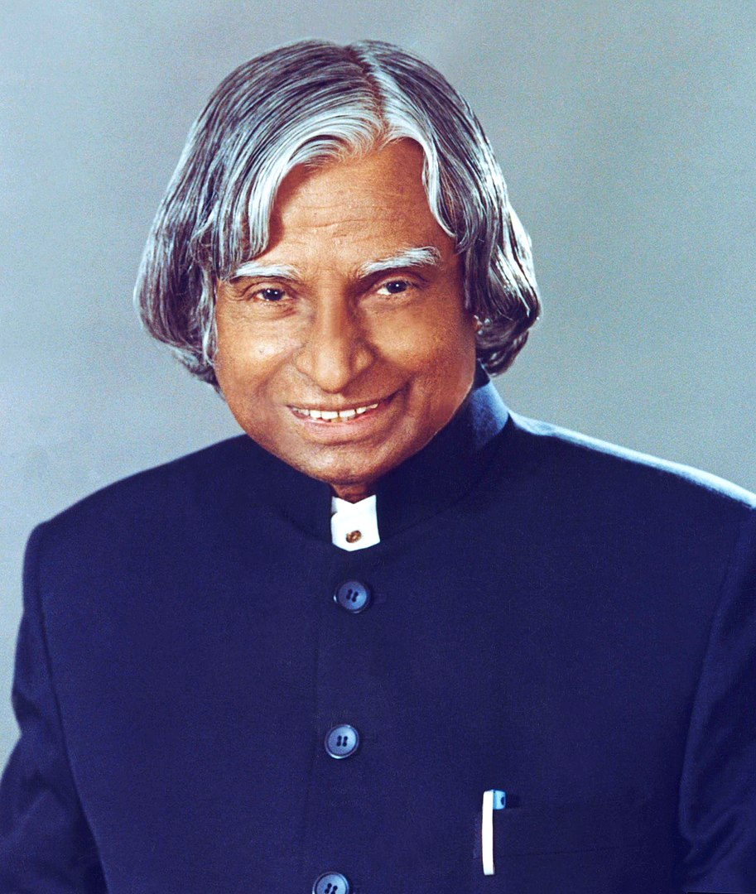

Dr. A.P.J. Abdul Kalam
1931-2015
Missile Man of India
Born on 15th October 1931 at Rameswaram in Tamil Nadu, Dr. Avul Pakir Jainulabdeen Abdul Kalam, specialized in Aeronautical Engineering from Madras Institute of Technology. Dr. Kalam made significant contribution as Project Director to develop India's first indigenous Satellite Launch Vehicle (SLV-III) which successfully injected the Rohini satellite in the near earth orbit in July 1980 and made India an exclusive member of Space Club.
Biographies
- Wings of fire
- Naa Jeevana Gamanam